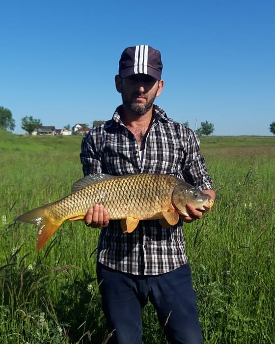
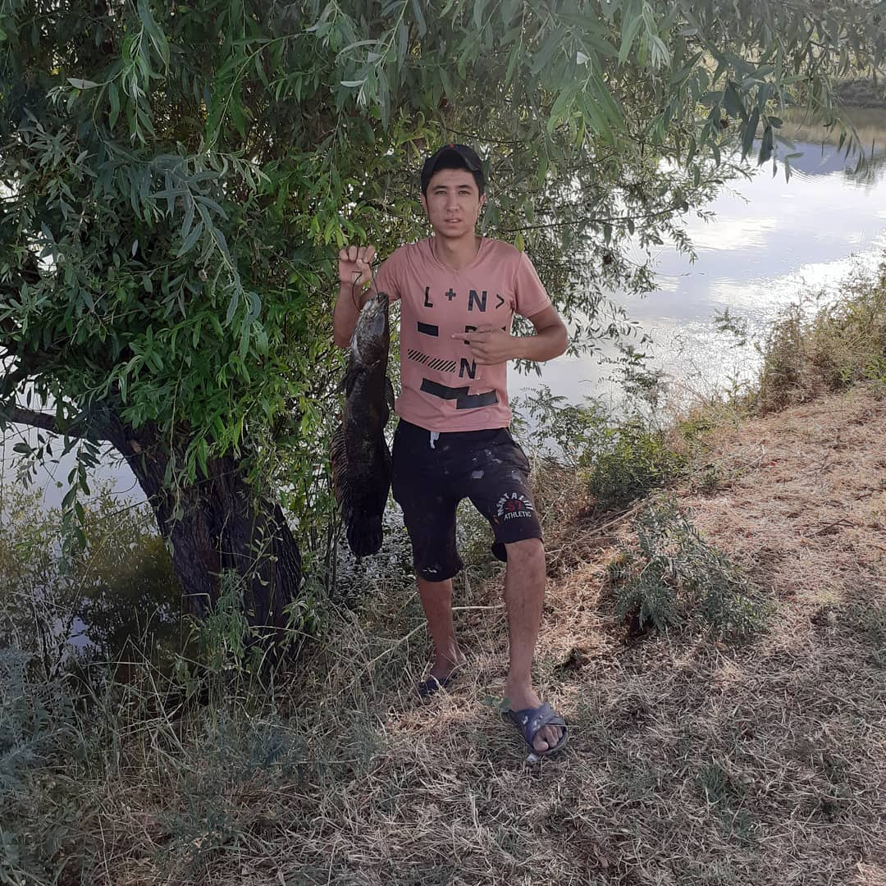

Рыбалка в Алматы и Алматинской области на озерах. Рыбалка и отдых. Звоните
+7-707-628
22 42,
+7-747-848-49-48
В окрестностях Алматы, расположены каскадным образом великолепные озера. Бурная зеленая
растительность,
деревья и кустарники, места для отдыха – это идеальные условия для рыбака. Мы стараемся и
создаем
благоприятные условия для отдыха и рыбалки.

Трудовое хозяйство АО "Бент" - пруд №13
Платная рыбалка и отдых - пруд №13
В наших прудах хорошо клюет Сазан, Карп, Белый амур, Карась, Вобла, Судак, Толстолобик
На прокат есть рыболовная лодка.
Вокруг озер много красивых и уютных мест, где вы можете провести хорошее время и приятно отдохнуть.
Наши посетители всегда довольные уезжают домой, прихватив с собой хороший улов.
Мы следим за чистотой и порядком. На прудах имеется круглосуточня охрана
Маршрут отрисован на этой странице

Просим ознакомиться с правилами рыбалки и отдыха
Условия рыбалки
1. Оплата за одну удочку - 1000тенге
2. Рыбалка в ночное время - 1000тенге
3. Рыбалка на лодке, только в дневное время суток 1 час - 1000тенге
Предупреждение:
1. Бросать мусор только в отведенные для мусора баки
2. Улов рыбы на одного человека разрешен не более 5кг, более 5кг - доплата 500тг за 1кг
3. Жечь костры только в отведенных местах для костров (в очагах кострищах), камни у очагов не
разбрасывать
4. Ловить рыбу только удочкой, спиннингами, закидками (оснащенными не более 3-х крючков)
5. Соблюдать правила рыбалки: Белый Амур - разрешается по весу выше 500гр Сазан, Карп, толстолоб- разрешается по весу выше 400гр Остальная рыба - разрешается любых размеров
Пойманная рыба по запрещенному стандарту,т.е. Сазан-Карп, толстолоб до 400гр., Белый Амур - до
500гр.Отпускается немедленно
За пойманную рыбу нестандартного размера будет наложен штраф в размере 5000тенге
Строго запрещено
1. Купание
2. Отлов рыбы сетями, дергушкой, переметами, экраном, острогой, электроудочкой(штраф согласно
законодательству РК)
3. Запрещается ломать деревья, саженцы, а также их выкапывать
4. Плавать на лодках в ночное время
5. Ловить рыбу неоплаченными снастями. (неоплаченные снасти будут изыматься, а рыбаки будут
оштрафованы)
Приятного отдыха и хорошей рыбалки
По вопросам просьба обращаться по телефонам:
8 707-628-22-42
8 747-848-49-48